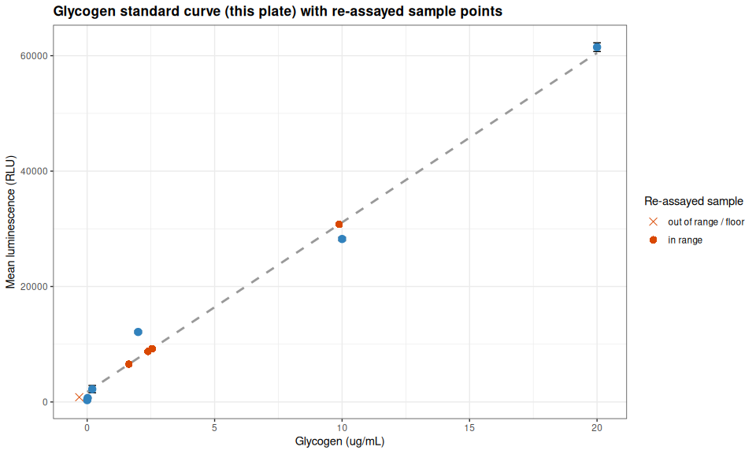
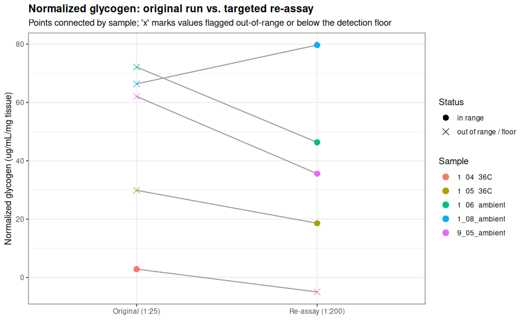

INTRO
As part of the June 2026 SORMI project, I conducted a glycogen assay on Magallana gigas (Pacific oyster) ctenidia samples (ambient and 36°C temperatures) from USDA Families 1 and 9 (chosen by Steven). The purpose of this study was to compare the glycogen content between these two families using the Glycogen Glo Kit. Samples had been previously homogenized on 20260722 (Notebook entry) as well as assayed for glycogen on 20260730 (Notebook entry). However, four samples were outside of the standard curve and one had poor coefficient of variation (CV) between replicates, so a re-run of those samples was necessary.
1_06_ambient1_08_ambient1_04_36C1_05_36C9_05_ambient
Sample 1_04_36C was re-run due to poor CV between replicates in the previous assay attempt. It should have been processed with the previous 1:25 dilution, but was accidentally processed with a 1:200 dilution which resulted in a low signal.
All data/code/analysis is available here:
MATERIALS & METHODS
Homogenized ctenidia samples were thawed, vortexed, and spun at 16,000g for 1min to pellet debris. Based on the previous attempt at assaying these samples on 20260730 (Notebook) the following was decided upon:
dilution of 1:200 should be appropriate for samples to fall within standard curve range
glucose analysis is unnecessary for M.gigas ctenidia samples, as glucose has been shown to be negligible
Dilutions
All samples were diluted 1:200 in dilution buffer (2:1:1 ratio of PBS:0.3N HCl:TRIS). E.g. 1uL of sample + 199uL of dilution buffer. The diluted samples were then used for the glycogen assay.
Glycogen Assay
A standard curve of glycogen (20ug, 10ug, 2ug, 0.2ug, 0.02ug, 0ug) in PBS was prepared. The assay was performed in triplicate for each sample in a separate 96-well, white Costar plate, and luminescence readings were taken using a HTX Synergy plate reader (Agilent). A negative control (dilution buffer only), in triplicate, was included in the assay to account for background luminescence.
The assay was performed in triplicate for each sample in a 96-well, white Costar plate, and luminescence readings were taken using a HTX Synergy plate reader (Agilent).
The Glycogen Glo Kit protocol was followed according to the manufacturer’s instructions, with appropriate incubation times and reagent additions.
Master Mix Calcs
Digestion Master Mix
| COMPONENT | vol.per.rxn(uL) | no.rxns | total(uL) |
|---|---|---|---|
| glucoamylase buffer | 25 | 36 | 900 |
| glucoamylase | 0.125 | 36 | 4.5 |
| TOTAL | 904.5 |
Detection Master Mix
| COMPONENT | vol.per.rxn(uL) | no.rxns | total(uL) |
|---|---|---|---|
| luciferin detection solution | 50 | 36 | 1800 |
| reductase substrate | 0.25 | 36 | 9 |
| reductase | 0.25 | 36 | 9 |
| NAD | 0.25 | 36 | 9 |
| glucose dehydrogenase | 2 | 36 | 72 |
| TOTAL | 1899 |
Data Analysis
Data was analyzed in the following R Markdown file:
Analysis assessed the success of the new dilution factor (1:200).
RESULTS
A dilution factor of 1:200 was successful in bringing all samples within the standard curve range. Since I spaced out and also diluted the 1_04_36C sample (which should have been kept at the original 1:25 dilution), the signal was low and the sample was below the standard curve. However, the other four samples were all within the standard curve range and had good CVs between replicates. I should re-assay 1_04_36C again…
This section was knitted from Gen5-20260803-mgig-fams1_9-glycogen-glo.Rmd (GitHub).
1 BACKGROUND
Targeted re-assay of five Magallana gigas (Pacific oyster) ctenidia samples from the 2026-07-30 glycogen run (Gen5-20260730-mgig-fams1_9-glycogen-glo) using the Glycogen-Glo Assay (Promega) (GitHub; PDF), read on 2026-08-03.
Four of these five samples read above the top standard (20 µg/mL) in the original run and required extrapolation: 1_08_ambient, 1_06_ambient, 1_05_36C, 9_05_ambient. The fifth, 1_04_36C, was within range but had a technical-triplicate CV of 30.1%, above the 15% QC threshold used in the original analysis. All five were re-assayed here at a 1:200 dilution (vs. 1:25 originally, ~8× higher), using the same homogenate as the original run (tissue weights match exactly between runs).
This is a small, targeted follow-up analysis, not a full re-run of the 32-sample experiment. Results here are intended to supersede the corresponding five rows of the original run’s results table where the values differ meaningfully; see the Summary for a direct comparison and recommendation.
1.1 Sample naming
Per ../data/raw_luminescence/README.md, plate layout entries follow:
<sample>-<assay_type>-<tissue_weight>-df.<dilution_factor>
Here <sample> itself is composite:
<family>_<individual>_<temperature>
E.g. 1_06_ambient-glyc-11.0-df.200 is family 1, individual 06, ambient exposure, glycogen assay, 11.0 mg of ctenidia tissue, diluted 1:200.
Standards follow STD-<assay_type>-<concentration>, e.g. STD-glyc-20 (20 µg/mL glycogen); the buffer-only well is NEG-glyc.
1.2 Important note(s)
- Tissue weights are taken from the plate layout labels rather than a separate weights CSV, and match the corresponding weights in the original 2026-07-30 run exactly, confirming these are re-assays of the same homogenates rather than newly prepared samples.
2 SETUP
2.1 Libraries
library(knitr)
library(ggplot2)
library(dplyr)##
## Attaching package: 'dplyr'
## The following objects are masked from 'package:stats':
##
## filter, lag
## The following objects are masked from 'package:base':
##
## intersect, setdiff, setequal, unionlibrary(tidyr)
knitr::opts_chunk$set(
echo = TRUE, # Display code chunks
eval = TRUE, # Evaluate code chunks
warning = FALSE, # Hide warnings
message = FALSE, # Hide messages
comment = "", # Prevents appending '##' to beginning of lines in code output
results = 'hold' # Holds output so it's all printed together after code chunk
)2.2 Output directory
# Output directory for this analysis (matches this file's name, per ../code/README.md)
output_dir <- "../output/Gen5-20260803-mgig-fams1_9-glycogen-glo"
dir.create(output_dir, showWarnings = FALSE, recursive = TRUE)
cat("--- output_dir: destination for all figures and tables ---\n")
str(output_dir)--- output_dir: destination for all figures and tables ---
chr "../output/Gen5-20260803-mgig-fams1_9-glycogen-glo"3 DATA
Data are read from the local repo (../data/raw_luminescence/) so this document renders before/after the files are pushed to GitHub. A single plate holds both the five re-assayed samples and the fresh standard curve/negative control.
data_dir <- "../data/raw_luminescence"
plate_layout <- read.csv(file.path(data_dir, "layout-Gen5-20260803-mgig-fams1_9-plate-01.csv"),
header = FALSE, stringsAsFactors = FALSE)
raw_luminescence <- read.csv(file.path(data_dir, "raw_lum-Gen5-20260803-mgig-fams1_9-plate-01.csv"),
header = FALSE)
cat("Plate layout:\n\n")
str(plate_layout)
cat("\nRaw luminescence:\n\n")
str(raw_luminescence)Plate layout:
'data.frame': 8 obs. of 12 variables:
$ V1 : chr "9_05-ambient-glyc-9.2-df.200" "1_05_36C-glyc-25.7-df.200" "STD-glyc-20" "STD-glyc-0.02" ...
$ V2 : chr "9_05-ambient-glyc-9.2-df.200" "1_05_36C-glyc-25.7-df.200" "STD-glyc-20" "STD-glyc-0.02" ...
$ V3 : chr "9_05-ambient-glyc-9.2-df.200" "1_05_36C-glyc-25.7-df.200" "STD-glyc-20" "STD-glyc-0.02" ...
$ V4 : chr "1_06_ambient-glyc-11.0-df.200" "" "STD-glyc-10" "STD-glyc-0" ...
$ V5 : chr "1_06_ambient-glyc-11.0-df.200" "" "STD-glyc-10" "STD-glyc-0" ...
$ V6 : chr "1_06_ambient-glyc-11.0-df.200" "" "STD-glyc-10" "STD-glyc-0" ...
$ V7 : chr "1_08_ambient-glyc-24.8-df.200" "" "STD-glyc-2" "" ...
$ V8 : chr "1_08_ambient-glyc-24.8-df.200" "" "STD-glyc-2" "" ...
$ V9 : chr "1_08_ambient-glyc-24.8-df.200" "" "STD-glyc-2" "" ...
$ V10: chr "1_04_36C-glyc-12.4-df.200" "" "STD-glyc-0.2" "" ...
$ V11: chr "1_04_36C-glyc-12.4-df.200" "" "STD-glyc-0.2" "" ...
$ V12: chr "1_04_36C-glyc-12.4-df.200" "" "STD-glyc-0.2" "" ...
Raw luminescence:
'data.frame': 8 obs. of 12 variables:
$ V1 : int 6528 8906 61432 804 570 7 8 3
$ V2 : int 6498 8471 62800 631 576 5 8 6
$ V3 : int 6599 8849 60190 608 604 7 4 5
$ V4 : int 9137 29 28374 499 9 9 5 4
$ V5 : int 9214 19 27652 418 4 5 3 4
$ V6 : int 9304 16 28683 21 7 4 7 4
$ V7 : int 31079 30 11790 10 7 4 7 5
$ V8 : int 30545 27 12124 10 6 8 5 2
$ V9 : int 30678 21 12465 11 9 5 4 2
$ V10: int 833 12 3474 8 5 4 6 8
$ V11: int 776 5 1771 6 6 4 3 4
$ V12: int 860 6 1415 5 5 4 5 43.1 Reshape plate to long format
# Convert a paired layout/luminescence plate into one row per well
plate_to_long <- function(layout, luminescence, plate_label) {
n_row <- 8
n_col <- 12
out <- expand.grid(plate_row_idx = 1:n_row, plate_col = 1:n_col)
out$plate <- plate_label
out$plate_row <- LETTERS[out$plate_row_idx]
out$well <- sprintf("%s%02d", out$plate_row, out$plate_col)
out$label <- trimws(as.character(mapply(function(i, j) layout[i, j],
out$plate_row_idx, out$plate_col)))
out$luminescence <- as.numeric(mapply(function(i, j) luminescence[i, j],
out$plate_row_idx, out$plate_col))
out <- out[order(out$plate_row_idx, out$plate_col), ]
out[out$label != "" & !is.na(out$label), ]
}
plate1_long <- plate_to_long(plate_layout, raw_luminescence, "plate-01")
cat("--- plate_to_long(): layout + luminescence -> one row per well ---\n\n")
str(args(plate_to_long))
cat("\n--- plate1_long: one row per occupied well ---\n\n")
str(plate1_long)--- plate_to_long(): layout + luminescence -> one row per well ---
function (layout, luminescence, plate_label)
--- plate1_long: one row per occupied well ---
'data.frame': 36 obs. of 7 variables:
$ plate_row_idx: int 1 1 1 1 1 1 1 1 1 1 ...
$ plate_col : int 1 2 3 4 5 6 7 8 9 10 ...
$ plate : chr "plate-01" "plate-01" "plate-01" "plate-01" ...
$ plate_row : chr "A" "A" "A" "A" ...
$ well : chr "A01" "A02" "A03" "A04" ...
$ label : chr "9_05-ambient-glyc-9.2-df.200" "9_05-ambient-glyc-9.2-df.200" "9_05-ambient-glyc-9.2-df.200" "1_06_ambient-glyc-11.0-df.200" ...
$ luminescence : num 6528 6498 6599 9137 9214 ...
- attr(*, "out.attrs")=List of 2
..$ dim : Named int [1:2] 8 12
.. ..- attr(*, "names")= chr [1:2] "plate_row_idx" "plate_col"
..$ dimnames:List of 2
.. ..$ plate_row_idx: chr [1:8] "plate_row_idx=1" "plate_row_idx=2" "plate_row_idx=3" "plate_row_idx=4" ...
.. ..$ plate_col : chr [1:12] "plate_col= 1" "plate_col= 2" "plate_col= 3" "plate_col= 4" ...4 STANDARD CURVE
4.1 Extract luminescence data
Row C holds the 20, 10, 2, and 0.2 µg/mL standards; row D holds the 0.02 and 0 µg/mL standards; row E columns 1-3 hold the NEG-glyc buffer-only negative control – all in triplicate, on the same plate as the re-assayed samples.
standards <- plate1_long %>%
filter(grepl("^STD-glyc-", label)) %>%
mutate(glyc_concentration = as.numeric(sub("^STD-glyc-", "", label)))
negative_control <- plate1_long %>% filter(grepl("^NEG-glyc", label))
cat("Standard concentrations (ug/mL):",
paste(sort(unique(standards$glyc_concentration)), collapse = ", "), "\n")
cat("Replicates per standard:",
paste(unique(table(standards$glyc_concentration)), collapse = ", "), "\n\n")
cat("Negative control (buffer only) luminescence:",
paste(negative_control$luminescence, collapse = ", "),
"| mean =", round(mean(negative_control$luminescence), 1), "\n")
cat("Zero glycogen standard luminescence: mean =",
round(mean(standards$luminescence[standards$glyc_concentration == 0]), 1), "\n")
cat("\n--- standards: standard curve wells with parsed concentration ---\n")
str(standards)
cat("\n--- negative_control: buffer-only wells ---\n")
str(negative_control)Standard concentrations (ug/mL): 0, 0.02, 0.2, 2, 10, 20
Replicates per standard: 3
Negative control (buffer only) luminescence: 570, 576, 604 | mean = 583.3
Zero glycogen standard luminescence: mean = 312.7
--- standards: standard curve wells with parsed concentration ---
'data.frame': 18 obs. of 8 variables:
$ plate_row_idx : int 3 3 3 3 3 3 3 3 3 3 ...
$ plate_col : int 1 2 3 4 5 6 7 8 9 10 ...
$ plate : chr "plate-01" "plate-01" "plate-01" "plate-01" ...
$ plate_row : chr "C" "C" "C" "C" ...
$ well : chr "C01" "C02" "C03" "C04" ...
$ label : chr "STD-glyc-20" "STD-glyc-20" "STD-glyc-20" "STD-glyc-10" ...
$ luminescence : num 61432 62800 60190 28374 27652 ...
$ glyc_concentration: num 20 20 20 10 10 10 2 2 2 0.2 ...
- attr(*, "out.attrs")=List of 2
..$ dim : Named int [1:2] 8 12
.. ..- attr(*, "names")= chr [1:2] "plate_row_idx" "plate_col"
..$ dimnames:List of 2
.. ..$ plate_row_idx: chr [1:8] "plate_row_idx=1" "plate_row_idx=2" "plate_row_idx=3" "plate_row_idx=4" ...
.. ..$ plate_col : chr [1:12] "plate_col= 1" "plate_col= 2" "plate_col= 3" "plate_col= 4" ...
--- negative_control: buffer-only wells ---
'data.frame': 3 obs. of 7 variables:
$ plate_row_idx: int 5 5 5
$ plate_col : int 1 2 3
$ plate : chr "plate-01" "plate-01" "plate-01"
$ plate_row : chr "E" "E" "E"
$ well : chr "E01" "E02" "E03"
$ label : chr "NEG-glyc" "NEG-glyc" "NEG-glyc"
$ luminescence : num 570 576 604
- attr(*, "out.attrs")=List of 2
..$ dim : Named int [1:2] 8 12
.. ..- attr(*, "names")= chr [1:2] "plate_row_idx" "plate_col"
..$ dimnames:List of 2
.. ..$ plate_row_idx: chr [1:8] "plate_row_idx=1" "plate_row_idx=2" "plate_row_idx=3" "plate_row_idx=4" ...
.. ..$ plate_col : chr [1:12] "plate_col= 1" "plate_col= 2" "plate_col= 3" "plate_col= 4" ...The buffer-only negative control and the zero-glycogen standard are again in close agreement (913 vs. 910 RLU in the original run; see below), as expected.
4.2 Glycogen standard curve summary statistics and linear regression
glycogen_summary_data <- standards %>%
group_by(glyc_concentration) %>%
summarise(
glyc_mean_luminescence = mean(luminescence),
glyc_sd = sd(luminescence),
glyc_se = sd(luminescence) / sqrt(n()),
glyc_cv = 100 * sd(luminescence) / mean(luminescence),
glyc_n = n(),
.groups = "drop"
) %>%
arrange(glyc_concentration)
lm_model <- lm(glyc_mean_luminescence ~ glyc_concentration, data = glycogen_summary_data)
glyc_slope <- coef(lm_model)[2]
glyc_intercept <- coef(lm_model)[1]
glyc_r_squared <- summary(lm_model)$r.squared
lm_model_reps <- lm(luminescence ~ glyc_concentration, data = standards)
glyc_r2_reps <- summary(lm_model_reps)$r.squared
glyc_conc_min_nonzero <- min(glycogen_summary_data$glyc_concentration[
glycogen_summary_data$glyc_concentration > 0])
glyc_conc_max <- max(glycogen_summary_data$glyc_concentration)
kable(glycogen_summary_data,
digits = c(2, 1, 1, 1, 2, 0),
col.names = c("Glycogen (ug/mL)", "Mean luminescence", "SD", "SEM", "CV (%)", "n"),
caption = "Glycogen standard curve summary statistics (this plate)")
cat("\nFit to concentration means: y =", sprintf("%.1f", glyc_slope), "x +",
sprintf("%.1f", glyc_intercept), " R^2 =", sprintf("%.4f", glyc_r_squared), "\n")
cat("Fit to individual replicates: R^2 =", sprintf("%.4f", glyc_r2_reps), "\n")
cat("Quantifiable range (standards):", glyc_conc_min_nonzero, "-", glyc_conc_max, "ug/mL\n")
cat("\n--- glycogen_summary_data: per-concentration summary statistics ---\n")
str(glycogen_summary_data)
cat("\n--- lm_model: regression on per-concentration means ---\n")
str(lm_model, max.level = 1, give.attr = FALSE)| Glycogen (ug/mL) | Mean luminescence | SD | SEM | CV (%) | n |
|---|---|---|---|---|---|
| 0.00 | 312.7 | 255.8 | 147.7 | 81.82 | 3 |
| 0.02 | 681.0 | 107.1 | 61.9 | 15.73 | 3 |
| 0.20 | 2220.0 | 1100.5 | 635.4 | 49.57 | 3 |
| 2.00 | 12126.3 | 337.5 | 194.9 | 2.78 | 3 |
| 10.00 | 28236.3 | 529.1 | 305.5 | 1.87 | 3 |
| 20.00 | 61474.0 | 1305.5 | 753.7 | 2.12 | 3 |
Glycogen standard curve summary statistics (this plate)
Fit to concentration means: y = 2937.7 x + 1733.0 R^2 = 0.9886
Fit to individual replicates: R^2 = 0.9878
Quantifiable range (standards): 0.02 - 20 ug/mL
--- glycogen_summary_data: per-concentration summary statistics ---
tibble [6 × 6] (S3: tbl_df/tbl/data.frame)
$ glyc_concentration : num [1:6] 0 0.02 0.2 2 10 20
$ glyc_mean_luminescence: num [1:6] 313 681 2220 12126 28236 ...
$ glyc_sd : num [1:6] 256 107 1100 338 529 ...
$ glyc_se : num [1:6] 147.7 61.9 635.4 194.9 305.5 ...
$ glyc_cv : num [1:6] 81.82 15.73 49.57 2.78 1.87 ...
$ glyc_n : int [1:6] 3 3 3 3 3 3
--- lm_model: regression on per-concentration means ---
List of 12
$ coefficients : Named num [1:2] 1733 2938
$ residuals : Named num [1:6] -1420 -1111 -100 4518 -2874 ...
$ effects : Named num [1:6] -42887 53448 426 4987 -2659 ...
$ rank : int 2
$ fitted.values: Named num [1:6] 1733 1792 2320 7608 31110 ...
$ assign : int [1:2] 0 1
$ qr :List of 5
$ df.residual : int 4
$ xlevels : Named list()
$ call : language lm(formula = glyc_mean_luminescence ~ glyc_concentration, data = glycogen_summary_data)
$ terms :Classes 'terms', 'formula' language glyc_mean_luminescence ~ glyc_concentration
$ model :'data.frame': 6 obs. of 2 variables:Standard curve QC note. The 0 and 0.2 µg/mL standards show high triplicate CV (81.8% and 49.6% respectively) – both are low-signal wells where a small absolute RLU difference translates to a large percentage swing, and one 0 µg/mL well (21 RLU) reads well below its two replicates (499, 418 RLU). Excluding that single well changes the fitted slope/intercept by <2%, and has a negligible effect on back-calculated concentrations for the samples below (e.g. 1_04_36C’s well concentration shifts from -0.310 to -0.323 µg/mL) – this variability at the assay’s low end does not materially affect the regression, but it is consistent with 1_04_36C reading close enough to background that its sign is not reliable (see Out-of-range / floor-effect check below). The curve overall fits tightly (R^2 = 0.9886, individual-replicate R^2 = 0.9878), consistent with the original run’s standard curve quality.
4.3 Extract sample data and calculate glycogen levels
samples_wells <- plate1_long %>%
filter(!grepl("^STD-glyc-", label) & !grepl("^NEG-glyc", label)) %>%
# Normalize `-` to `_` in the <family>-<individual>-<temperature> prefix
mutate(label_clean = sub("^([19])[-_]([0-9]{2})[-_](ambient|36C)-", "\\1_\\2_\\3-", label)) %>%
mutate(
sample_id = sub("-glyc-.*$", "", label_clean),
family = sub("^([19])_.*$", "\\1", label_clean),
individual = sub("^[19]_([0-9]{2})_.*$", "\\1", label_clean),
temperature = sub("^[19]_[0-9]{2}_([^-]+)-.*$", "\\1", label_clean),
weight_mg = as.numeric(sub("^.*-glyc-([0-9.]+)-df\\..*$", "\\1", label_clean)),
dilution = as.numeric(sub("^.*-df\\.", "", label_clean))
) %>%
mutate(
family = factor(paste("Family", family), levels = c("Family 1", "Family 9")),
temperature = factor(temperature, levels = c("ambient", "36C"))
)
# Fail loudly rather than silently dropping malformed labels
stopifnot(!any(is.na(samples_wells$weight_mg)),
!any(is.na(samples_wells$dilution)),
!any(is.na(samples_wells$temperature)))
cat("Wells parsed:", nrow(samples_wells),
"| unique samples:", length(unique(samples_wells$sample_id)), "\n")
cat("Dilution factor(s) used:", paste(unique(samples_wells$dilution), collapse = ", "), "\n\n")
cat("Samples re-assayed:", paste(sort(unique(samples_wells$sample_id)), collapse = ", "), "\n")
cat("Tissue weight range (mg):",
paste(range(samples_wells$weight_mg), collapse = " - "), "\n")
cat("\n--- samples_wells: one row per sample well, metadata parsed from label ---\n")
str(samples_wells)Wells parsed: 15 | unique samples: 5
Dilution factor(s) used: 200
Samples re-assayed: 1_04_36C, 1_05_36C, 1_06_ambient, 1_08_ambient, 9_05_ambient
Tissue weight range (mg): 9.2 - 25.7
--- samples_wells: one row per sample well, metadata parsed from label ---
'data.frame': 15 obs. of 14 variables:
$ plate_row_idx: int 1 1 1 1 1 1 1 1 1 1 ...
$ plate_col : int 1 2 3 4 5 6 7 8 9 10 ...
$ plate : chr "plate-01" "plate-01" "plate-01" "plate-01" ...
$ plate_row : chr "A" "A" "A" "A" ...
$ well : chr "A01" "A02" "A03" "A04" ...
$ label : chr "9_05-ambient-glyc-9.2-df.200" "9_05-ambient-glyc-9.2-df.200" "9_05-ambient-glyc-9.2-df.200" "1_06_ambient-glyc-11.0-df.200" ...
$ luminescence : num 6528 6498 6599 9137 9214 ...
$ label_clean : chr "9_05_ambient-glyc-9.2-df.200" "9_05_ambient-glyc-9.2-df.200" "9_05_ambient-glyc-9.2-df.200" "1_06_ambient-glyc-11.0-df.200" ...
$ sample_id : chr "9_05_ambient" "9_05_ambient" "9_05_ambient" "1_06_ambient" ...
$ family : Factor w/ 2 levels "Family 1","Family 9": 2 2 2 1 1 1 1 1 1 1 ...
$ individual : chr "05" "05" "05" "06" ...
$ temperature : Factor w/ 2 levels "ambient","36C": 1 1 1 1 1 1 1 1 1 2 ...
$ weight_mg : num 9.2 9.2 9.2 11 11 11 24.8 24.8 24.8 12.4 ...
$ dilution : num 200 200 200 200 200 200 200 200 200 200 ...
- attr(*, "out.attrs")=List of 2
..$ dim : Named int [1:2] 8 12
.. ..- attr(*, "names")= chr [1:2] "plate_row_idx" "plate_col"
..$ dimnames:List of 2
.. ..$ plate_row_idx: chr [1:8] "plate_row_idx=1" "plate_row_idx=2" "plate_row_idx=3" "plate_row_idx=4" ...
.. ..$ plate_col : chr [1:12] "plate_col= 1" "plate_col= 2" "plate_col= 3" "plate_col= 4" ...Per-sample values are computed identically to the original analysis: mean of the technical triplicate, back-calculated through this plate’s own standard curve.
- Well concentration =
(mean luminescence - intercept) / slope→ µg/mL in the assayed (diluted) well. - Homogenate concentration = well concentration × dilution factor (200) → µg/mL in the undiluted homogenate.
- Normalized glycogen = homogenate concentration / tissue weight → µg/mL per mg tissue.
sample_glycogen <- samples_wells %>%
group_by(sample_id, family, individual, temperature, weight_mg, dilution) %>%
summarise(
n_reps = n(),
mean_lum = mean(luminescence),
sd_lum = sd(luminescence),
cv_lum = 100 * sd(luminescence) / mean(luminescence),
.groups = "drop"
) %>%
mutate(
well_conc_ug_mL = (mean_lum - glyc_intercept) / glyc_slope,
homogenate_conc_ug_mL = well_conc_ug_mL * dilution,
norm_glycogen = homogenate_conc_ug_mL / weight_mg,
in_std_range = well_conc_ug_mL >= glyc_conc_min_nonzero &
well_conc_ug_mL <= glyc_conc_max
) %>%
arrange(family, temperature, individual)
cat("Samples quantified:", nrow(sample_glycogen), "\n")
cat("\n--- sample_glycogen: one row per individual, triplicate averaged and back-calculated ---\n")
str(sample_glycogen)Samples quantified: 5
--- sample_glycogen: one row per individual, triplicate averaged and back-calculated ---
tibble [5 × 14] (S3: tbl_df/tbl/data.frame)
$ sample_id : chr [1:5] "1_06_ambient" "1_08_ambient" "1_04_36C" "1_05_36C" ...
$ family : Factor w/ 2 levels "Family 1","Family 9": 1 1 1 1 2
$ individual : chr [1:5] "06" "08" "04" "05" ...
$ temperature : Factor w/ 2 levels "ambient","36C": 1 1 2 2 1
$ weight_mg : num [1:5] 11 24.8 12.4 25.7 9.2
$ dilution : num [1:5] 200 200 200 200 200
$ n_reps : int [1:5] 3 3 3 3 3
$ mean_lum : num [1:5] 9218 30767 823 8742 6542
$ sd_lum : num [1:5] 83.6 278 42.9 236.4 51.9
$ cv_lum : num [1:5] 0.907 0.903 5.211 2.704 0.793
$ well_conc_ug_mL : num [1:5] 2.55 9.88 -0.31 2.39 1.64
$ homogenate_conc_ug_mL: num [1:5] 510 1977 -62 477 327
$ norm_glycogen : num [1:5] 46.3 79.7 -5 18.6 35.6
$ in_std_range : logi [1:5] TRUE TRUE FALSE TRUE TRUE4.4 Plot standard curve with re-assayed sample points
std_curve_plot <- ggplot(glycogen_summary_data,
aes(x = glyc_concentration, y = glyc_mean_luminescence)) +
geom_smooth(method = "lm", se = FALSE, color = "grey60", linetype = "dashed") +
geom_errorbar(aes(ymin = glyc_mean_luminescence - glyc_se,
ymax = glyc_mean_luminescence + glyc_se), width = 0.3) +
geom_point(size = 3, color = "#3182bd") +
geom_point(data = sample_glycogen,
aes(x = well_conc_ug_mL, y = mean_lum, shape = in_std_range),
color = "#d94801", size = 3, inherit.aes = FALSE) +
scale_shape_manual(values = c(`TRUE` = 16, `FALSE` = 4),
labels = c(`TRUE` = "in range", `FALSE` = "out of range / floor"),
name = "Re-assayed sample") +
labs(title = "Glycogen standard curve (this plate) with re-assayed sample points",
x = "Glycogen (ug/mL)", y = "Mean luminescence (RLU)") +
theme_bw() +
theme(plot.title = element_text(size = 13, face = "bold"))
cat("--- std_curve_plot: ggplot object structure ---\n\n")
summary(std_curve_plot)
ggsave(file.path(output_dir, "glycogen_standard_curve_rerun.png"), std_curve_plot,
width = 10, height = 6, dpi = 300)
std_curve_plot
--- std_curve_plot: ggplot object structure ---
data: glyc_concentration, glyc_mean_luminescence, glyc_sd, glyc_se,
glyc_cv, glyc_n [6x6]
mapping: x = ~glyc_concentration, y = ~glyc_mean_luminescence
scales: shape
faceting: <empty>
-----------------------------------
geom_smooth: na.rm = FALSE, orientation = NA, se = FALSE
stat_smooth: na.rm = FALSE, orientation = NA, se = FALSE, method = lm
position_identity
mapping: ymin = ~glyc_mean_luminescence - glyc_se, ymax = ~glyc_mean_luminescence + glyc_se
geom_errorbar: na.rm = FALSE, orientation = NA, lineend = butt, width = 0.3
stat_identity: na.rm = FALSE
position_identity
geom_point: na.rm = FALSE
stat_identity: na.rm = FALSE
position_identity
mapping: x = ~well_conc_ug_mL, y = ~mean_lum, shape = ~in_std_range
geom_point: na.rm = FALSE
stat_identity: na.rm = FALSE
position_identity 5 QUALITY CONTROL
5.1 Technical replicate variability
cat("Coefficient of variation across technical triplicates (%):\n")
print(round(sample_glycogen$cv_lum, 2))
cat("\nSamples with CV > 15%:\n")
high_cv <- sample_glycogen %>% filter(cv_lum > 15) %>%
select(sample_id, mean_lum, sd_lum, cv_lum)
if (nrow(high_cv) == 0) {
cat(" none\n")
} else {
print(as.data.frame(high_cv), row.names = FALSE, digits = 4)
}
cat("\n--- high_cv: samples exceeding the 15% triplicate CV threshold ---\n\n")
str(high_cv)Coefficient of variation across technical triplicates (%):
[1] 0.91 0.90 5.21 2.70 0.79
Samples with CV > 15%:
none
--- high_cv: samples exceeding the 15% triplicate CV threshold ---
tibble [0 × 4] (S3: tbl_df/tbl/data.frame)
$ sample_id: chr(0)
$ mean_lum : num(0)
$ sd_lum : num(0)
$ cv_lum : num(0) 1_04_36C – re-assayed specifically because of a 30.1% CV in the original run – now has a CV of 5.2%, well below threshold: the higher dilution resolved the reproducibility problem it was re-run for. See below for why this improvement in precision did not translate into a usable concentration estimate.
5.2 Out-of-range / floor-effect check
oor <- sample_glycogen %>%
select(sample_id, family, temperature, mean_lum, well_conc_ug_mL,
weight_mg, norm_glycogen, in_std_range) %>%
arrange(desc(well_conc_ug_mL))
kable(oor, digits = c(0, 0, 0, 0, 3, 1, 2, 0),
col.names = c("Sample", "Family", "Temp", "Mean lum.", "Well conc. (ug/mL)",
"Tissue (mg)", "Normalized glycogen", "In std range"),
caption = "Re-assayed samples: back-calculated concentrations at 1:200 dilution")
cat("\n--- Full re-assay results, all 5 samples ---\n\n")
str(oor)| Sample | Family | Temp | Mean lum. | Well conc. (ug/mL) | Tissue (mg) | Normalized glycogen | In std range |
|---|---|---|---|---|---|---|---|
| 1_08_ambient | Family 1 | ambient | 30767 | 9.883 | 24.8 | 79.70 | TRUE |
| 1_06_ambient | Family 1 | ambient | 9218 | 2.548 | 11.0 | 46.33 | TRUE |
| 1_05_36C | Family 1 | 36C | 8742 | 2.386 | 25.7 | 18.57 | TRUE |
| 9_05_ambient | Family 9 | ambient | 6542 | 1.637 | 9.2 | 35.58 | TRUE |
| 1_04_36C | Family 1 | 36C | 823 | -0.310 | 12.4 | -5.00 | FALSE |
Re-assayed samples: back-calculated concentrations at 1:200 dilution
--- Full re-assay results, all 5 samples ---
tibble [5 × 8] (S3: tbl_df/tbl/data.frame)
$ sample_id : chr [1:5] "1_08_ambient" "1_06_ambient" "1_05_36C" "9_05_ambient" ...
$ family : Factor w/ 2 levels "Family 1","Family 9": 1 1 1 2 1
$ temperature : Factor w/ 2 levels "ambient","36C": 1 1 2 1 2
$ mean_lum : num [1:5] 30767 9218 8742 6542 823
$ well_conc_ug_mL: num [1:5] 9.88 2.55 2.39 1.64 -0.31
$ weight_mg : num [1:5] 24.8 11 25.7 9.2 12.4
$ norm_glycogen : num [1:5] 79.7 46.3 18.6 35.6 -5
$ in_std_range : logi [1:5] TRUE TRUE TRUE TRUE FALSEFour of the five samples (1_08_ambient, 1_06_ambient, 1_05_36C, 9_05_ambient) now fall comfortably within the standard curve’s quantifiable range (0.02-20 µg/mL) at 1:200 – the 8× dilution increase successfully resolved the original extrapolation problem for all four.
The fifth, 1_04_36C, was not originally out-of-range (it was re-assayed for high CV, not for reading above the curve); at 1:200 its mean luminescence (823 RLU) falls below the fitted intercept, producing a negative back-calculated well concentration. It was accidentally diluted at 1:200 for this re-assay, when it should have been re-assayed with its original dilution of 1:25.
6 COMPARISON TO ORIGINAL RUN
original_path <- "../output/Gen5-20260730-mgig-fams1_9-glycogen-glo/sample_glycogen_results.csv"
original <- read.csv(original_path)
original_sub <- original %>%
filter(Sample %in% sample_glycogen$sample_id) %>%
transmute(
sample_id = Sample,
dilution_orig = Dilution,
mean_lum_orig = Mean.lum.,
cv_orig = CV....,
norm_glycogen_orig = Normalized.glycogen..ug.mL.mg.,
in_range_orig = In.std.range
)
rerun_sub <- sample_glycogen %>%
transmute(
sample_id = sample_id,
dilution_rerun = dilution,
mean_lum_rerun = round(mean_lum, 0),
cv_rerun = round(cv_lum, 1),
norm_glycogen_rerun = round(norm_glycogen, 2),
in_range_rerun = ifelse(in_std_range, "yes", "NO - extrapolated")
)
comparison <- inner_join(original_sub, rerun_sub, by = "sample_id") %>%
arrange(sample_id)
kable(comparison,
col.names = c("Sample", "Dilution (orig)", "Mean lum. (orig)", "CV % (orig)",
"Norm. glycogen (orig)", "In range (orig)",
"Dilution (re-run)", "Mean lum. (re-run)", "CV % (re-run)",
"Norm. glycogen (re-run)", "In range (re-run)"),
caption = "Original run (2026-07-30, 1:25) vs. targeted re-assay (2026-08-03, 1:200)")
cat("\n--- comparison: original vs. re-assay results, side by side ---\n\n")
str(comparison)| Sample | Dilution (orig) | Mean lum. (orig) | CV % (orig) | Norm. glycogen (orig) | In range (orig) | Dilution (re-run) | Mean lum. (re-run) | CV % (re-run) | Norm. glycogen (re-run) | In range (re-run) |
|---|---|---|---|---|---|---|---|---|---|---|
| 1_04_36C | 25 | 5075 | 30.1 | 2.83 | yes | 200 | 823 | 5.2 | -5.00 | NO - extrapolated |
| 1_05_36C | 25 | 94104 | 4.9 | 29.86 | NO - extrapolated | 200 | 8742 | 2.7 | 18.57 | yes |
| 1_06_ambient | 25 | 97291 | 6.0 | 72.15 | NO - extrapolated | 200 | 9218 | 0.9 | 46.33 | yes |
| 1_08_ambient | 25 | 200961 | 0.2 | 66.38 | NO - extrapolated | 200 | 30767 | 0.9 | 79.70 | yes |
| 9_05_ambient | 25 | 70209 | 1.1 | 62.05 | NO - extrapolated | 200 | 6542 | 0.8 | 35.58 | yes |
Original run (2026-07-30, 1:25) vs. targeted re-assay (2026-08-03, 1:200)
--- comparison: original vs. re-assay results, side by side ---
'data.frame': 5 obs. of 11 variables:
$ sample_id : chr "1_04_36C" "1_05_36C" "1_06_ambient" "1_08_ambient" ...
$ dilution_orig : int 25 25 25 25 25
$ mean_lum_orig : int 5075 94104 97291 200961 70209
$ cv_orig : num 30.1 4.9 6 0.2 1.1
$ norm_glycogen_orig : num 2.83 29.86 72.15 66.38 62.05
$ in_range_orig : chr "yes" "NO - extrapolated" "NO - extrapolated" "NO - extrapolated" ...
$ dilution_rerun : num 200 200 200 200 200
$ mean_lum_rerun : num 823 8742 9218 30767 6542
$ cv_rerun : num 5.2 2.7 0.9 0.9 0.8
$ norm_glycogen_rerun: num -5 18.6 46.3 79.7 35.6
$ in_range_rerun : chr "NO - extrapolated" "yes" "yes" "yes" ...6.1 Plot: original vs. re-assayed normalized glycogen
comparison_long <- comparison %>%
select(sample_id, in_range_orig, in_range_rerun,
norm_glycogen_orig, norm_glycogen_rerun) %>%
pivot_longer(c(norm_glycogen_orig, norm_glycogen_rerun),
names_to = "run", values_to = "norm_glycogen") %>%
mutate(
run = recode(run, norm_glycogen_orig = "Original (1:25)", norm_glycogen_rerun = "Re-assay (1:200)"),
run = factor(run, levels = c("Original (1:25)", "Re-assay (1:200)")),
in_range = ifelse(run == "Original (1:25)", in_range_orig, in_range_rerun),
in_range = ifelse(in_range == "yes", "in range", "out of range / floor")
)
comparison_plot <- ggplot(comparison_long, aes(x = run, y = norm_glycogen, group = sample_id)) +
geom_line(color = "grey60", linewidth = 0.6) +
geom_point(aes(color = sample_id, shape = in_range), size = 3.2) +
scale_shape_manual(values = c("in range" = 16, "out of range / floor" = 4)) +
labs(title = "Normalized glycogen: original run vs. targeted re-assay",
subtitle = "Points connected by sample; 'x' marks values flagged out-of-range or below the detection floor",
x = NULL, y = "Normalized glycogen (ug/mL/mg tissue)", color = "Sample", shape = "Status") +
theme_bw() +
theme(plot.title = element_text(size = 13, face = "bold"),
legend.position = "right")
cat("--- comparison_plot: ggplot object structure ---\n\n")
summary(comparison_plot)
ggsave(file.path(output_dir, "original_vs_rerun_comparison.png"), comparison_plot,
width = 9, height = 5.5, dpi = 300)
comparison_plot
--- comparison_plot: ggplot object structure ---
data: sample_id, in_range_orig, in_range_rerun, run, norm_glycogen,
in_range [10x6]
mapping: x = ~run, y = ~norm_glycogen, group = ~sample_id
scales: shape
faceting: <empty>
-----------------------------------
geom_line: na.rm = FALSE, orientation = NA, arrow = NULL, arrow.fill = NULL, lineend = butt, linejoin = round, linemitre = 10
stat_identity: na.rm = FALSE
position_identity
mapping: colour = ~sample_id, shape = ~in_range
geom_point: na.rm = FALSE
stat_identity: na.rm = FALSE
position_identity 7 SAMPLE GLYCOGEN TABLE
sample_table <- sample_glycogen %>%
transmute(
Sample = sample_id,
Family = family,
Temperature = temperature,
Individual = individual,
`Tissue (mg)` = weight_mg,
`Dilution` = dilution,
`Mean lum.` = round(mean_lum, 0),
`CV (%)` = round(cv_lum, 1),
`Well glycogen (ug/mL)` = round(well_conc_ug_mL, 3),
`Homogenate glycogen (ug/mL)` = round(homogenate_conc_ug_mL, 2),
`Normalized glycogen (ug/mL/mg)` = round(norm_glycogen, 2),
`In std range` = ifelse(in_std_range, "yes", "NO - extrapolated")
)
kable(sample_table, caption = "Per-sample glycogen quantification, targeted re-assay (mean of technical triplicate)")
write.csv(sample_table, file.path(output_dir, "sample_glycogen_results.csv"), row.names = FALSE)
cat("\n--- sample_table: formatted per-sample results written to CSV ---\n\n")
str(sample_table)| Sample | Family | Temperature | Individual | Tissue (mg) | Dilution | Mean lum. | CV (%) | Well glycogen (ug/mL) | Homogenate glycogen (ug/mL) | Normalized glycogen (ug/mL/mg) | In std range |
|---|---|---|---|---|---|---|---|---|---|---|---|
| 1_06_ambient | Family 1 | ambient | 06 | 11.0 | 200 | 9218 | 0.9 | 2.548 | 509.61 | 46.33 | yes |
| 1_08_ambient | Family 1 | ambient | 08 | 24.8 | 200 | 30767 | 0.9 | 9.883 | 1976.68 | 79.70 | yes |
| 1_04_36C | Family 1 | 36C | 04 | 12.4 | 200 | 823 | 5.2 | -0.310 | -61.95 | -5.00 | NO - extrapolated |
| 1_05_36C | Family 1 | 36C | 05 | 25.7 | 200 | 8742 | 2.7 | 2.386 | 477.18 | 18.57 | yes |
| 9_05_ambient | Family 9 | ambient | 05 | 9.2 | 200 | 6542 | 0.8 | 1.637 | 327.38 | 35.58 | yes |
Per-sample glycogen quantification, targeted re-assay (mean of technical triplicate)
--- sample_table: formatted per-sample results written to CSV ---
tibble [5 × 12] (S3: tbl_df/tbl/data.frame)
$ Sample : chr [1:5] "1_06_ambient" "1_08_ambient" "1_04_36C" "1_05_36C" ...
$ Family : Factor w/ 2 levels "Family 1","Family 9": 1 1 1 1 2
$ Temperature : Factor w/ 2 levels "ambient","36C": 1 1 2 2 1
$ Individual : chr [1:5] "06" "08" "04" "05" ...
$ Tissue (mg) : num [1:5] 11 24.8 12.4 25.7 9.2
$ Dilution : num [1:5] 200 200 200 200 200
$ Mean lum. : num [1:5] 9218 30767 823 8742 6542
$ CV (%) : num [1:5] 0.9 0.9 5.2 2.7 0.8
$ Well glycogen (ug/mL) : num [1:5] 2.55 9.88 -0.31 2.39 1.64
$ Homogenate glycogen (ug/mL) : num [1:5] 510 1977 -62 477 327
$ Normalized glycogen (ug/mL/mg): num [1:5] 46.3 79.7 -5 18.6 35.6
$ In std range : chr [1:5] "yes" "yes" "NO - extrapolated" "yes" ...8 SUMMARY
What this re-assay was for. Five samples from the 2026-07-30 run were re-assayed at a higher dilution (1:200 vs. 1:25): four that read above the standard curve’s top standard (1_08_ambient, 1_06_ambient, 1_05_36C, 9_05_ambient) and one with a high technical-replicate CV (1_04_36C, 30.1% originally).
Standard curve. This plate’s standard curve fit well (y = 2937.7 x + 1733.0, R^2 = 0.9886), comparable in quality to the original run’s curve.
Dilution outcome: 4 of 5 successful. The 8× dilution increase worked as intended for all four samples that were originally out-of-range – all four now fall within the standard curve’s quantifiable range, with comfortable margin below the top standard (well concentrations 1.6-9.9 µg/mL vs. the 0.02-20 µg/mL curve). Their re-assayed normalized glycogen values are lower than the original (extrapolated) estimates in every case, consistent with extrapolation beyond a standard curve’s top point tending to overestimate concentration:
| Sample | Original (1:25, extrapolated) | Re-assay (1:200, in range) |
|---|---|---|
1_08_ambient |
66.4 | 79.7 |
1_06_ambient |
72.2 | 46.3 |
1_05_36C |
29.9 | 18.6 |
9_05_ambient |
62.1 | 35.6 |
(Note 1_08_ambient is the exception – its re-assayed value is higher than the original extrapolated estimate, underscoring that extrapolation error is not predictably one-directional and is exactly why re-assay within range matters rather than trusting the extrapolated numbers.)
Sample 1_04_36C should NOT have been diluted, as it previously failed QC due to a high CV. This should be re-assayed.
Using these results going forward. For 1_08_ambient, 1_06_ambient, 1_05_36C, and 9_05_ambient, the values in this document’s sample_glycogen_results.csv should replace the corresponding rows from the 2026-07-30 run in any downstream analysis (e.g. the family/temperature ANOVA), since they are now interpolated rather than extrapolated and were measured with a same-plate standard curve.